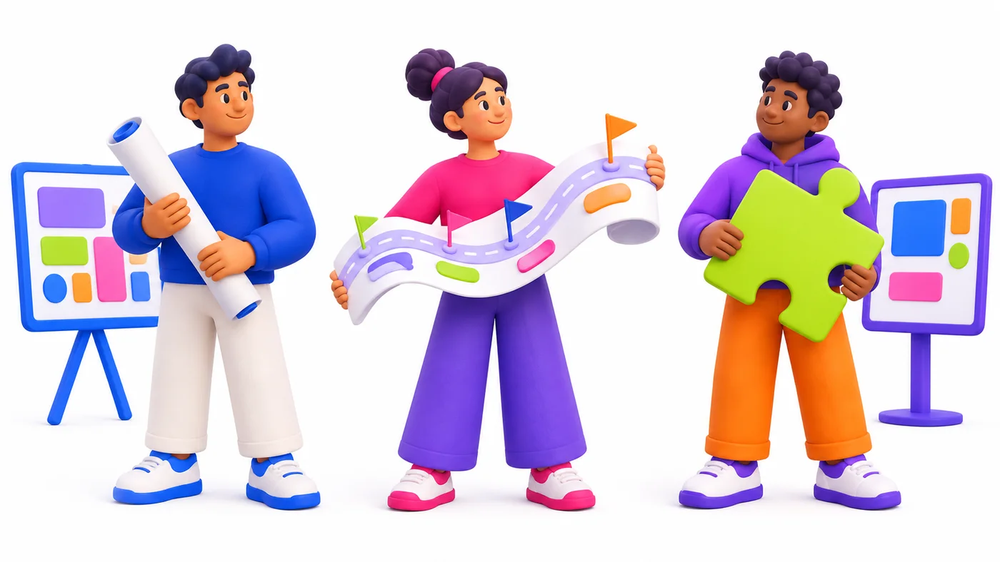
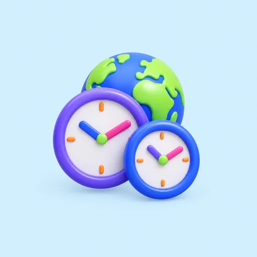
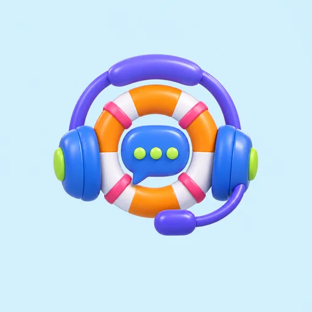

Review milestones
Staging builds, progress reviews and test results at agreed points.
Discovery, delivery and review milestones. [draft: one sentence on what the client holds at each milestone]

[draft: two short paragraphs on why one process runs every project, how scope is agreed before the build starts, and who the client works with day to day]

 Project lead
Project lead
The staging build is ready. Review it before the next stage begins.
ApproveReplyStages
You know what you get at each stage before it starts, and you review it before the next one begins.
Requirements, users, existing systems and constraints. We agree the initial scope and the questions that need further investigation.
User flows, interfaces, data structures and API requirements, reviewed with you before development begins.
Work through agreed priorities with review milestones, an update cadence and acceptance criteria.
Production release, handover and the ongoing support your application needs, agreed in the project scope.
[draft: two sentences on how changes after release are scoped, reviewed and priced]
Requirements, users, existing systems and constraints. We agree the initial scope and the questions that need further investigation.
You receive
User flows, interfaces, data structures and API requirements, reviewed with you before development begins.
You receive
Work through agreed priorities with review milestones, an update cadence and acceptance criteria.
You receive
Production release, handover and the ongoing support your application needs, agreed in the project scope.
You receive
[draft: two sentences on how changes after release are scoped, reviewed and priced]
You receive
Overlap
Time zone, meeting schedule and update cadence are set before work begins, so collaboration expectations are clear.
Staging builds, progress reviews and test results at agreed points.
Kickoff, progress updates and reviews, each with a set time and the people who attend.
A communication window that suits your day, agreed before work begins.
Tools behind the work
[draft: one sentence on what the team uses it for and what the client can see]
[draft: one sentence on staging builds and production releases]
[draft: one sentence on test results shared at each milestone]
[draft: one sentence on the progress view the client receives]

A scope summary, open questions and an initial estimate before the build starts.

Staging builds, progress reviews and test results at agreed points.

Communication window, meetings and update cadence set before work begins.

Documentation and deployment access handed over at release.

Testing, access controls and the checks your application needs before release.

Dedicated developers can work with your tools, priorities and development process.
Something else on your mind? Send it with your brief.
Ask us directlySend a short brief through the form. We follow up to discuss your users, existing systems and constraints, then agree an initial scope and the questions that need further investigation.
Yes. Dedicated developers can work with your tools, priorities and development process. Roles, availability and engagement terms are confirmed during the enquiry.
The team is based in India. Before work begins we agree a communication window, meeting schedule and update cadence that suits your time zone.
Handover is planned in the project scope. It covers documentation, deployment access and the ongoing responsibilities your team needs.
AWS, Azure and Google Cloud for infrastructure, with Docker, Kubernetes and Terraform. For mobile we build native iOS apps in Swift, native Android apps in Kotlin, and cross-platform apps in Flutter or React Native.
Tell us what you need built. A short brief is enough to start the conversation.